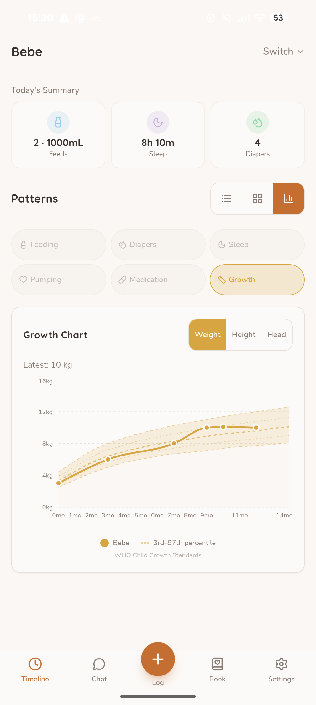

BABYBABY GUIDES / GROWTH & CONTEXT
What a baby's growth curve can—and cannot—tell you.
A dot on a chart can prompt a good question. A series of careful measurements, discussed with your child's clinician, tells a much fuller story.
At a checkup, a clinician weighs your baby, measures their length and head circumference, and places the results on a chart. Then someone says “25th percentile” or “the line has shifted,” and a number that sounded ordinary a moment ago can suddenly feel loaded. What does it actually tell you?
Growth charts are tools for seeing how a child's measurements compare with a reference and how those measurements change over time. The CDC says they contribute to an overall health picture; they are not meant to diagnose a child on their own. The American Academy of Pediatrics (AAP) asks parents to focus on the growth trend rather than one number.
A percentile is a comparison, not a score.
If a baby's weight is at the 25th percentile on an age- and sex-specific chart, that means their measurement is higher than about 25% of measurements in the chart's reference group and lower than about 75%. It does not mean they have achieved 25% of a goal. The AAP explains that a higher percentile is not a better grade; the question is how the child's measurements and circumstances fit together.
Clinicians can look at several different measurements. For a baby, those commonly include weight for age, length for age, head circumference for age, and weight in relation to length. These answer different questions. A weight number alone does not show the same thing as weight relative to length. The CDC lists the relevant WHO charts for children under two.
A series tells more than one dot.
A single point shows size at one moment. A series can show whether growth continues over time and whether the pattern has changed. The CDC says growth monitoring depends on a series of accurate measurements, while the AAP likewise emphasizes rate and trend. That is why a clinician may want to compare several visits before interpreting a change.
Do not assume every wiggle is a problem—or that an unchanged percentile proves everything is fine. The pattern is one piece of an assessment. A change that concerns you is a reason to ask about it, especially if it comes with a feeding, health, or development concern. Your child's clinician can decide what needs checking and whether another measurement or follow-up is useful.
Before interpreting a surprising point, check how it was measured.
Growth-chart comparisons depend on accurate weight, length, age, and recording. The CDC recommends careful measurement and correct plotting because a misplaced point can distort the apparent pattern. If a result looks very different from previous visits, it is reasonable to ask whether the measurement can be checked and whether the same units and chart were used.
A chart change can also reflect a change in the chart itself. In the United States, clinicians generally use WHO standards from birth to age two, then CDC charts afterward. The CDC warns that a child's percentile classification may shift at that transition because the reference group and measurement methods change. Local clinical practice can differ elsewhere, so ask which standard your clinician uses.
The chart cannot know the whole child.
A line has no space for family history, a child's medical history, or what a clinician notices during an examination. The CDC says growth measurements should be considered alongside medical and family history when a pattern needs interpretation. The AAP describes growth review as part of the well-child visit, not a substitute for it.
This is also why comparing your baby with a friend's baby rarely helps. Their starting points, measurements, and circumstances differ. Even a chart with many dots cannot tell you why a pattern changed. It can show a question worth discussing; it cannot supply a diagnosis.
Bring three questions to the next visit.
- “Which measurement are we looking at?” Weight for age, length for age, head circumference, and weight for length are not interchangeable.
- “How does this compare with the previous measurements?” Ask the clinician to show you the series, and whether a surprising point should be remeasured.
- “Does anything else about my child change your interpretation?” This opens the door to discuss feeding, health history, and any concern you have noticed without trying to diagnose from the chart yourself.
If you are worried before the next routine visit, contact your child's care professional rather than waiting for another dot. You do not need to solve the chart on your own.
Keep a useful record, not a verdict.
If you record growth in BabyBaby, its chart can keep the dates and measurements together so you can find them when you speak with a clinician. The view below uses sample entries and shows how points appear against reference curves. Treat it as a way to recall what was recorded, not as a clinical assessment of any individual child.

This guide is general information, not an interpretation of your child's growth. Ask a qualified care professional who knows your child about any measurement, change, or concern.
Sources and further reading.
- CDC: Growth Charts (reviewed September 2024).
- CDC: Using WHO Growth Standard Charts (March 2024).
- American Academy of Pediatrics: Understanding Growth Charts (updated March 2026).
- WHO: Child Growth Standards.
KEEP EXPLORING
More context for the everyday.
Read our guide to feeding, sleep, and diaper notes for another way to bring useful context to a care conversation.
All BabyBaby guides